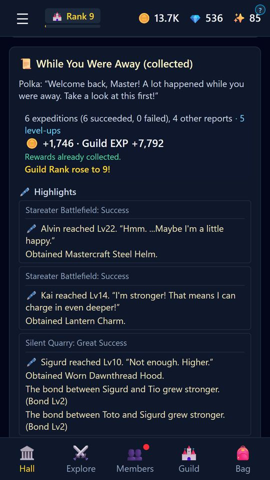

01
Adventures go on while you’re away
Time keeps flowing while the app is closed, so expeditions, crafting, training, and research keep moving. Open the game a few times a day in your spare moments, collect the results, and give your next orders.
Auto-repeat rests once 4 hours have passed since you last opened the game (gems or the Monthly Pass can extend this), so check in now and then.